COMP 1601 Winter 2020
Tut09 Screen Rotation
© L.D. Nel 2020
Revisions -none yet
Description:
The purpose of this exercise is to learn how state information can be saved and restored when android activities are destroyed and later recreated. This is an integral part of the android activity lifecyle. Using this technique we will solve the screen rotation problem observed in the last tutorial.
You need to demonstrate your exercise to the TA or Prof. before you leave the class to get credit for it. Marks: 2 or completion, 1 for partial progress, 0 for no show or no progress. (A mark of 1 can be upgraded to 2 is show us your completed work within one week of this exercise.)
Instructions:
Background:
Acitivties in android go through a lifecycle as a result of having lifecyle methods invoked on them by the android operating system. Methods such as onCreate(), onPause(), onResume() etc. The lifecycle of Activity instances is described here and a picture of the life cycle is as follows:
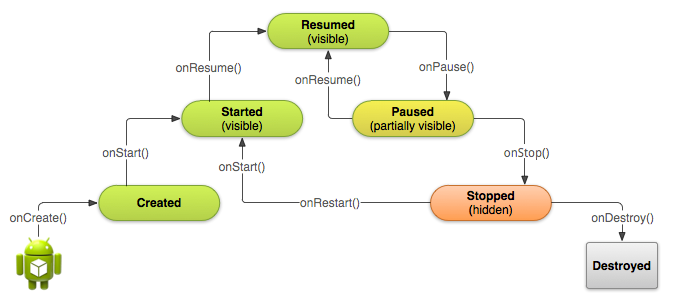
In addition a Bundle savedInstanceState often accompanies these methods which allows the activities to save their state when being paused, or stopped, and recover their state when being resumed. In this tutorial we will make use of this lifecyle method.
Demo Code
For this tutorial use your answer code from the previous tutorial on Activity Lifecyles. Run your app and perform the screen rotation scenario:
Screen Rotation Scenario (from previous tutorial)
Clear the logcat, run the app from Android Studio. Answer a couple of quiz questions then rotate the device screen from portrait to landscape and then back to portrait. What do you observe about the app behaviour. Explain the logcat output that results. How many actual activities are involved?
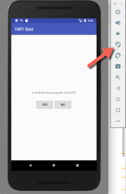 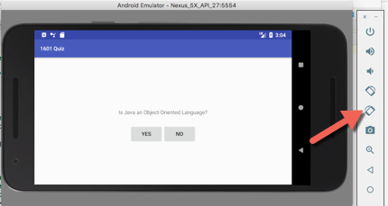 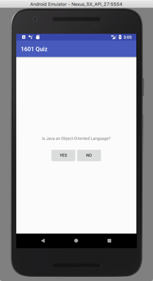
This scenario reveals a significant problem. The questions reset to the start. What explanation did the logcat provide about why this is happening. In this tutorial we will build a solution for this problem.
Problem 1 Logcat setup
For problem 1 we will investigate another important lifecycle method. It is not a true lifecycle method in that it doesn't indicate you are moving to a new state but it is called when certain lifecyle state transistions happen.
To learn about this read the android documentation associated with the lifecyle (look for the section called Saving and Restoring Activity State) here.
In the main activity override the onSaveInstancesState(Bundle) method:
@Override
public void onSaveInstanceState(Bundle savedInstanceState) {
// Always call the superclass so it can save the view hierarchy state
super.onSaveInstanceState(savedInstanceState);
Log.i(TAG, "onSaveInstanceState(Bundle)");
}
Run the app and go through some of the scenarios from the last tutorial including the rotation scenario. Find out when this method is being called. Does it happen on particular state transitions?
Problem 2 Bundles
Android provides a mechanism to store the state of an activity when it moves to the stopped lifecyle state. The state variables of the activity are put in a data structure of type Bundle. Read the documentation on Bundle. It is a Key-Value pair collection that can store specific primitive types. In particular locate in the documentation the put method:
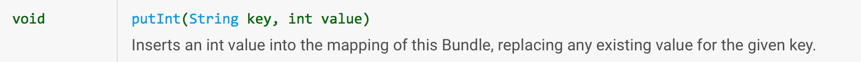
and the get methods:
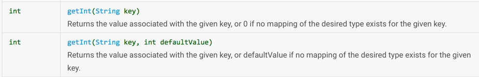
These are examples of the kinds of methods used to put and retrieve simple (primitive) items from a Bundle.
When an activity is destroyed by, for example, the user pressing the back button or by rotating the device the activity's data that android knows about is stored in a Bundle object. If a new activity of the same kind is created it is passed that Bundle object which is then used to initialize the activity. Unfortunately the bundle does not carry our information about what quiz question the user was on.
The idea is to "piggyback" our application's state information on that bundle object. That is, when the state is being saved we can put our current quiz question index into the bundle and when a new activity of the same type is being created we can read the question index out of the bundle.
Create a static String constant to act as the bundle item key (can you figure out why it needs to be static?):
private static String QUESTION_INDEX_KEY = "question_index";
In the onSaveInstanceState() method write the app's quiz question index to the bundle object.
@Override
public void onSaveInstanceState(Bundle savedInstanceState) {
// Always call the superclass so it can save the view hierarchy state
super.onSaveInstanceState(savedInstanceState);
savedInstanceState.putInt(QUESTION_INDEX_KEY, mCurrentQuestionIndex);
Log.i(TAG, "onSaveInstanceState(Bundle)");
}
In the onCreate(Bundle savedInstanceState) method read the question index out of the bundle that is passed in. Note this code must check for the possiblity that there is no saved state information. That is, check that saveInstanceState is not, in fact, null:
if(savedInstanceState != null)
mCurrentQuestionIndex = savedInstanceState.getInt(QUESTION_INDEX_KEY, 0);
Rerun the app and go through the rotation use case. You should observe that the application now remembers which question the user was on.
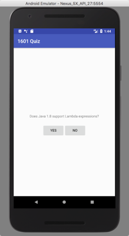 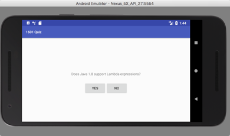
Based on this you now have a way to store arbitrary information to be restored when a destroyed app gets recreated. Be aware though that this mechanism is meant for small amount of primitive data. It is not meant to carry a large payload or use complex (java object) data types.
Problem 3
[Note this section is from winter 2018, API level 26 please let us know if your experience is much different.]
Now that your app can survive a screen rotation it opens up the possiblity of designing a different layout for the landscape orientation. Many apps are easier to use if the portrait and landscape layouts are specific to those orientations.
Right click on the res category in the Android project view and choose res->New->Android Resource Directory:
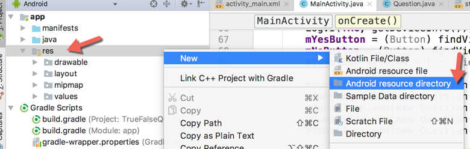
In the dialog choose layout from the Resource type dropdown menu, choose Orientation from the Available qualifier's and the press the >> button:
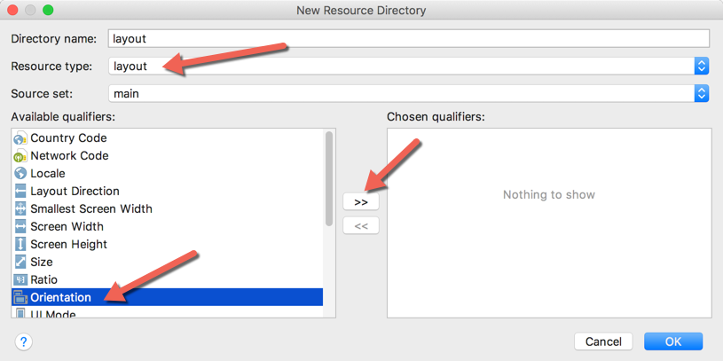
Next ensure that Landscape is selected in the Screen orientation: dropdown menu (this will automatically change the Directory name: to layout-land:
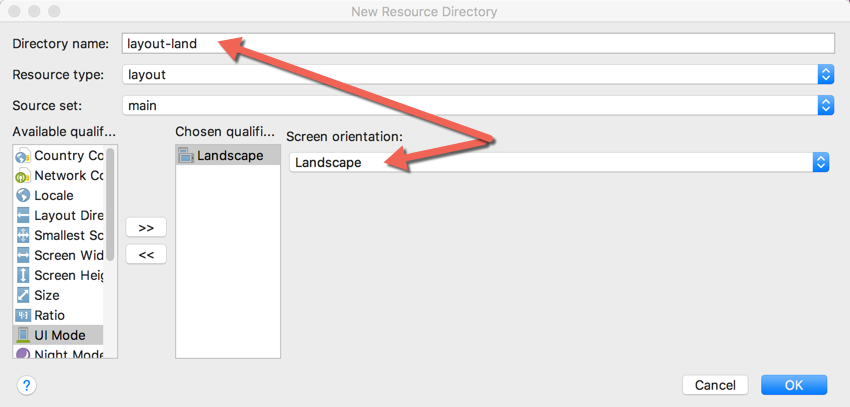
You should now be able to see the two directories (note you need to switch to Project view rather than Android view to see the picture as below.)
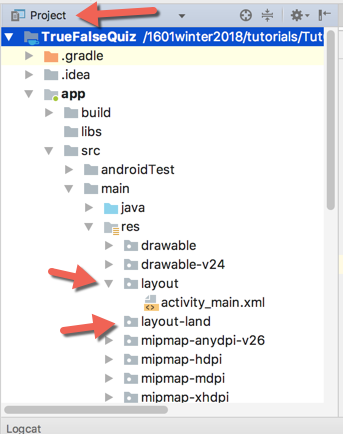
The -land suffix is an example of a configuration qualifier. Android uses qualifiers on res subdirectories to identifiy which resources will best match the current device configuration. Read more about them here:
https://developer.android.com/guide/topics/resources/providing-resources.html.
Problem 4)
Now to build a landscape layout start with the existing activity_main.xml layout file. Copy this file and paste a copy into the layout-land subdirectory (Make sure to keep the same file name -they have to accessed with the same resource ID.)
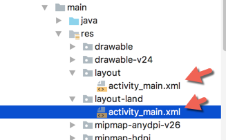
Now make some layout changes to the activity_main.xml layout file in the layout-land directory. Below I've chosen to put the buttons on the left and the question on the right beside them in landscape orientation.
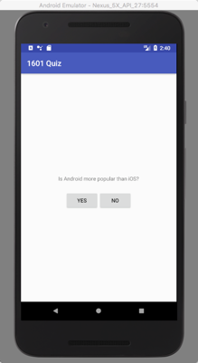 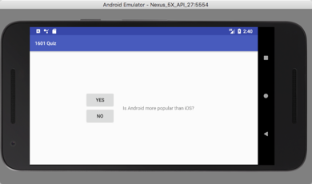 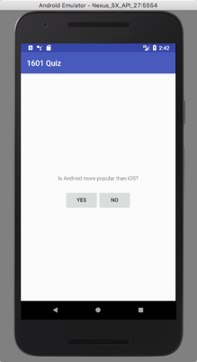
Now you are both able to handle rotations in you app and also design specific UI layouts that are best suited for portait and landscape orientations.
When you have completed these problems demonstrate your code to the TA or Prof. to get credit for the tutorial.